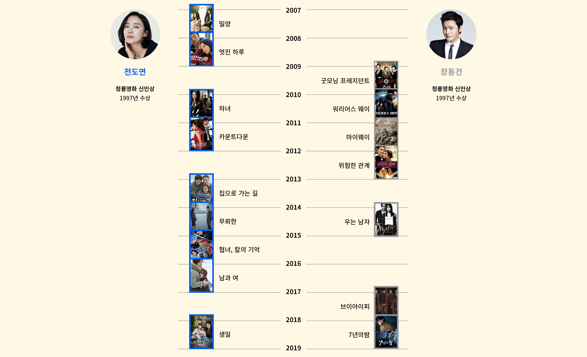

한국 대표 영화인들의 발자취를
살펴볼까요?
필모그래피 비교

제작비 비교
필모그래피 비교

필모그래피 비교
세계적으로 유명한 배우인 전도연과 장동건의 필모를 비교했을 때,
필모의 갯수는 비슷하지만
작품의 규모 차이가 보인다.
필모의 갯수는 비슷하지만
작품의 규모 차이가 보인다.
성별 자체가 영화인의 커리어에 영향을 주지 않았을까?
영화 산업 내 젠더 불균형은
어떻게 측정할 수 있을까?
영화 산업 내 젠더 불균형은
어떻게 측정할 수 있을까?